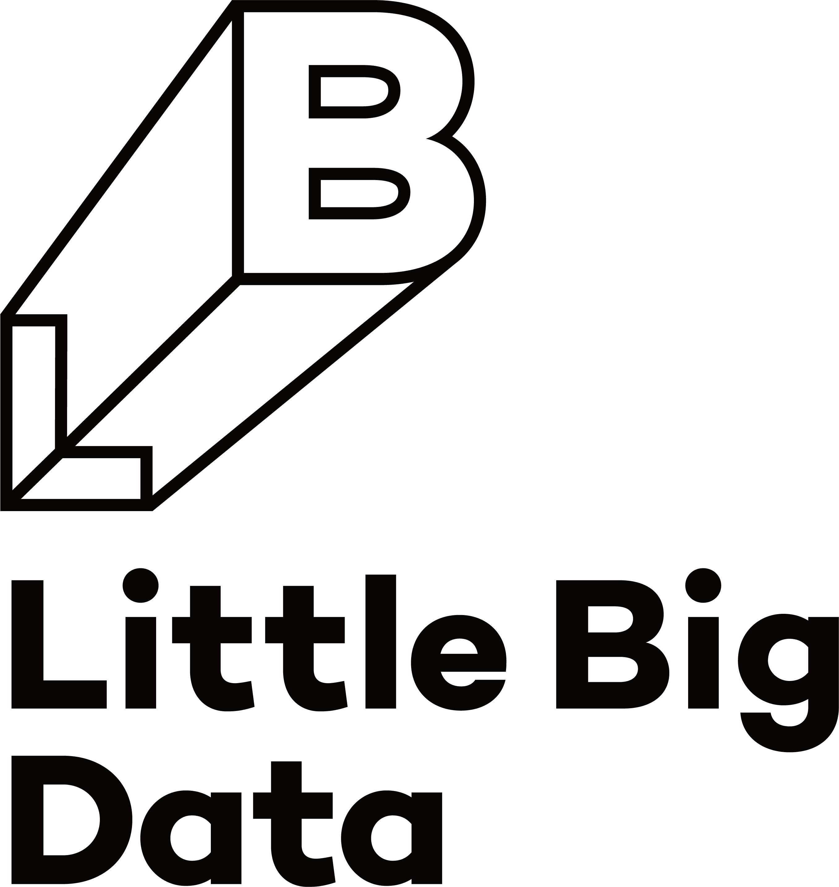

스폰서쉽
데이터 사용자들이 다 함께 즐길 수 있는 행사를 만들기 위해 도움을 주실 후원사를 모집합니다.
소개
데이터야놀자는 오픈소스와 커뮤니티 더 나아가 자유소프트웨어 운동을 추구하는 즐거운 데이터 축제입니다. 후원하는 기업이나 발표자보다는 참가자 모두가 즐겁게 데이터의 세상을 즐기는 작고 따듯한 축제를 민주적이고 지속가능하게 만들어가고자 노력하고 있습니다.
스폰서 모집 안내
데이터야놀자는 데이터 사용자들이 자유롭게 즐길 수 있는 행사를 만들고자 합니다. 운영진과 참가자들의 금전적인 이득 없이 운영되며, 음식, 진행 도우미, 기념품, 소정의 강사료 등의 일부를 커뮤니티와 오픈소스의 혜택을 받고 있는 기업이 부담하는 것이 맞다는 생각하여 스폰서를 모집하고 있습니다. 한편 데이터야놀자의 후원은 "상호후원" 이며, 오픈소스와 커뮤니티의 철학에 동의하는 기업만의 후원을 받고 또한 그러한 기업들을 후원합니다.
작년 혜택
- 커뮤니티와 오픈소스 문화에 동조해 주는 기업 문화 홍보
- 인재 영입을 위한 기업 및 구인 홍보
- 다양한 언론/미디어 노출
- 네트워킹 공간 부스 제공
등급별 혜택 안내
개최지와 여건에 따라 등급별 지원 내용은 다소 달라질 수 있습니다.
또한, 후원사에 의해 제공되는 튜토리얼이나 세션, 증정품은 운영진과 사전 협의가 필요합니다.
-등급별 비교표-
| 등급 | 다이아몬드 | 플레티넘 | 골드 | 실버 | 브론즈 |
|---|---|---|---|---|---|
| 후원금 | 10,000,000원 | 5,000,000원 | 3,000,000원 | 1,000,000원 | 500,000원 |
| 구좌 | 1 | 2 | 3 | 제한 없음 | 제한 없음 |
| 티켓 지원 | 10매 | 8매 | 6매 | 4매 | 2매 |
| 부스 | 테이블 2개 | 테이블 1개 | 테이블 1개 | - | - |
| 후원사 로고 등재 |
홈페이지, 온/오프라인 광고물 로고 이미지 순서와 크기: 후원 금액에 비례 |
||||
-기타 후원-
커뮤니티 협력, 도서, 미디어, 예술, 디자인 등 다양한 후원도 가능합니다.
참고
- 세부 사항은 행사 전까지 다소 변경될 수 있습니다.
- 후원금은 VAT 별도 금액입니다.
- 계산서 발급이 불가합니다.
- 참가자 명단은 행사 당일 동의한 사람에 한해 제공됩니다.
- 후원사 자세한 문의는 wjdcjf0219@gmail.com로 주시기 바랍니다.
다이아몬드
플레티넘

Microsoft는 사람들의 무한한 가능성을 믿습니다. Microsoft는 지구상의 모든 사람과 조직이 더 많은 것들을 성취할 수 있도록 힘을 실어주는 것을 사명으로 삼고 있습니다.
골드
ebrain은 “Tech, Career, Life”를 모토로, 소프트웨어 기술 · 인재 · 회사 · HR · 경력을 전문적으로 다루는 “Tech Talent Company” 입니다.
하이퍼커넥트는 전 세계 2억 다운로드를 기록한 모바일 영상 플랫폼 ‘아자르’를 시작으로, 혁신 기술 기반의 다양한 글로벌 서비스를 만들어가고 있는 Technology-driven Company입니다. 매일 6천만 건 이상의 영상통화가 이뤄지는 글로벌 서비스 ‘아자르’를 안정적으로 운영하고, 아직 한 번도 가보지 못한 국가에서 새로운 비즈니스 기회를 찾아내고, 머신러닝 기반의 혁신 기술을 개발하는 모든 과정에서 데이터 기반의 의사결정을 통해 어려운 성장 과제들을 해결해가고 있습니다.
실버
모빌리티 혁신으로 사회적 가치를 실현합니다.
Cloudera의 플랫폼은 100% 오픈 소스 소프트웨어와 개방형 표준을 토대로 비즈니스의 유연성을 높이고, 비용 관리 능력을 강화하고, 성과를 개선합니다. Cloudera는 Hadoop을 토대로 구축한 세계에서 가장 빠르고 쉽고 안전한 데이터 플랫폼을 제공합니다. 그리고 데이터를 사용하여 가장 어려운 비즈니스 문제를 해결하는 데 도움을 드립니다.
에이비일팔공은 데이터를 통해 마케팅 ROI를 극대화합니다.
브론즈
데이터베이스의 보안(접근제어/보안/감사), 협업(공동 리소스 및 실행관리), 개발 환경을 제공하는 플랫폼이며, 데이터베이스 보안(정보보호관리체계(ISMS, PIMS), 유럽 개인정보 보호법(GDPR)) 표준 준수를 위한 기본 적인 환경을 제공하기 위해 노력하고 있습니다.
ZEPL은 분석 세계를 재구성하려는 열렬한 개인으로 구성된 팀에 의해 만들어졌습니다. 우리의 열정은 훌륭한 제품을 만들고 있지만 우리의 초점은 사용자입니다. Apache® ZeppelinTM을 만들고 광범위한 오픈 소스 커뮤니티와 협력하여 우리의 사명은 사일로 분석 워크 플로우를 제거하고 모든 사용자에 대해 빠르고 원활한 데이터 통찰력을 제공하는 것입니다.
도서
저희 한빛미디어는 개발자의 동반자를 꿈꾸며 믿을 수 있는 도서를 제공하기 위해 노력하고 있습니다. 다양한 IT기술과 지식을 보다 쉽고 편리하게 전달하기 위해 종이책 뿐만 아니라 전자책(리얼타임 eBook/리얼타임 Web Book)도 제공하고 있습니다. 여러분의 신뢰가 가장 중요한 가치라고 믿고, 올바른 지식과 정보를 전달 드릴 수 있도록 항상 최선을 다하겠습니다.
Pivotal은 글로벌 엔터프라이즈 기업들이 클라우드 네이티브 플랫폼, 툴 및 실리콘 밸리의 최신 소프트웨어 개발 방법론과 문화를 체득할 수 있도록 돕고 있습니다. 세계 유수의 기업들이 Pivotal을 기반으로 가장 중요한 애플리케이션을 개발하고 운영하고 있습니다. 탁월한 사용자 환경을 제공하는 Pivotal의 플랫폼, 툴, 방법론에 대해 알아보십시오. http://Pivotal.io/kr
We make learning Easy!
구체적으로 도움이 되는 책을 만드는 곳
커뮤니티
Little Big Data, 다양한 사람들과 데이터 사이언스 이야기를 나누는 캐쥬얼한 밋업
데이터는 Big한 회사만이 다루는 것이 아닙니다.Little Big Data 커뮤니티는 다양한 장소, 다양한 사람들의 Data Science이야기를 듣자는 취지로 캐쥬얼한 정기 밋업을 만들어갑니다.
'캐글뽀개기'는 2015년에 개설된 캐글(kaggle.com) 플랫폼 대회를 참여하는 스터디 그룹으로, 처음 라면을 끓이는 사람처럼 데이터를 쉽게 뽀개는 것을 목표로 수평적으로 공부할 수 있는 오픈 모임을 지향합니다. 캐글을 뽀개고 싶은 분들이 있다면 언제든지 스터디 그룹 형성을 지원해드립니다!
데잇걸즈(Data.it.girls)는 디지털 트랜스포메이션 시대에 초점이 맞춰진 인재 프로그램으로, 데이터에 대한 지식과 IT의 전문성을 가진 여성으로 거듭나는 가치에 초점을 두고 통계, 데이터분석, 프로그래밍 도구를 활용해 데이터 기반의 문제해결능력과 빠르게 변화하는 디지털 환경에 대한 적응 전문성이 갖춰진 여성인재 양성을 목표로 하고 있습니다.
RE는 다양한 IT 분야를 다루는 사람들이 모인 연구 중점 단체입니다. 우리는 우리들의 활동을 통하여 많은 사람들에게 다양한 경험과 기회를 제공하고자 합니다.
협업
협업 도구의 모든 것, TOAST Dooray!
TOAST Dooray!는 전통적인 메일, 캘린더, 드라이브뿐 아니라, 이슈 기반의 업무 처리와 협업에 최적화된 프로젝트 관리 도구, 메신저, 위키를 함께 제공합니다. 업무에 필요한 기능들이 하나로 통합된 TOAST Dooray!는 데이터야놀자 운영진들이 2년째 사용 중입니다. 지금 바로 이용해보시고 효과적인 협업 환경을 만들어보세요.